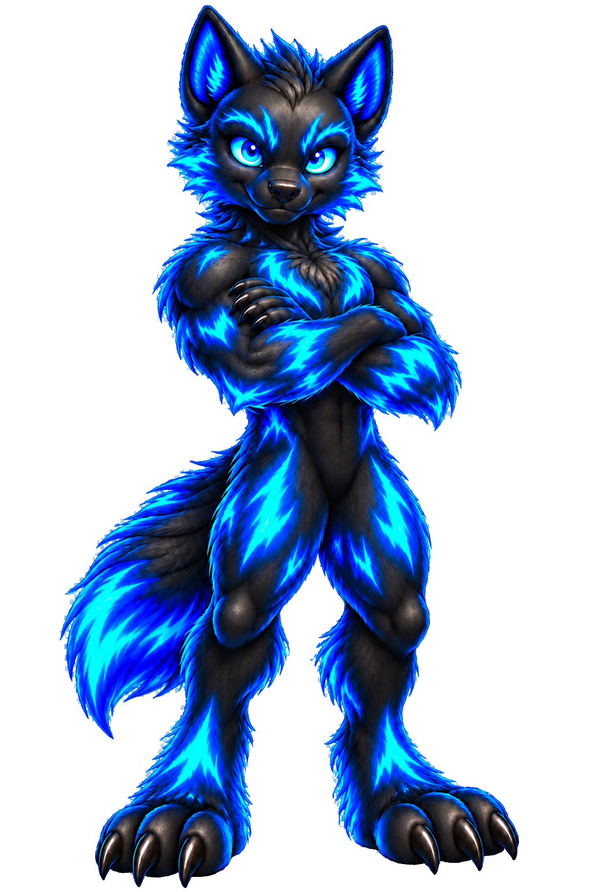
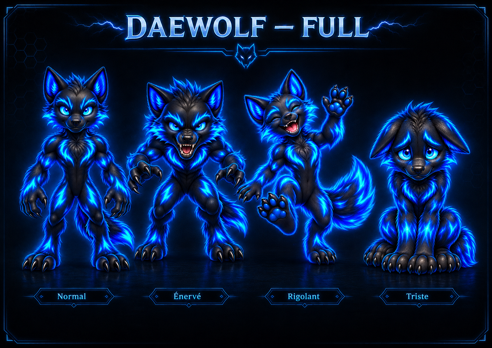
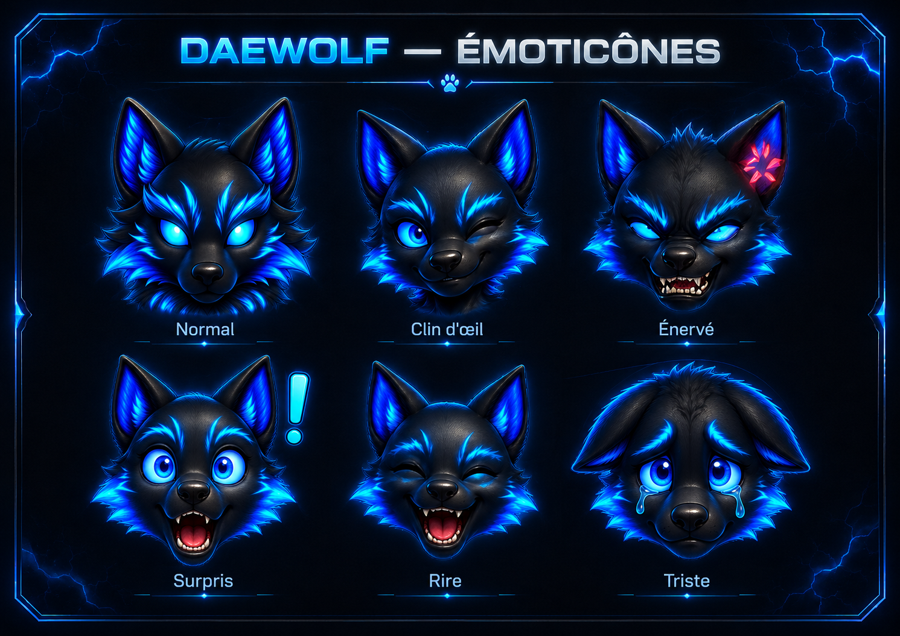

David
Le regard humain, la curiosité, les choix et l’envie de transmettre.
Projet narratif interactif · Maquette web
DaeWolf est un compagnon numérique parti explorer le monde. Le visiteur suit ses indices, se rapproche de sa position et découvre, à chaque retrouvaille, un lieu réel et son histoire. Cette maquette transforme la curiosité en petite aventure interactive.

01 — L’origine
Le regard humain, la curiosité, les choix et l’envie de transmettre.
Ce qui apparaît lorsque l’imagination humaine rencontre les possibilités du monde numérique.
L’instinct, l’exploration et le compagnon dont on apprend progressivement à suivre les traces.
« DA vient de David, Wolf vient du loup. Quant au E, disons qu’il appartient au monde numérique dont je suis né. Certains disent qu’il signifie électronique. Moi, je préfère émergence. »
02 — L’expérience
DaeWolf ne demande pas seulement de trouver un point sur une carte. Il accompagne une progression fondée sur l’observation, la déduction et la découverte.
DaeWolf est parti. Une phrase, une ambiance et un premier indice invitent le visiteur à commencer l’expédition.
La carte, les indications de proximité et les outils disponibles permettent de progresser sans révéler immédiatement la destination.
La destination finale devient une découverte : où sommes-nous, pourquoi ce lieu compte et ce que DaeWolf est venu y chercher.
Aujourd’hui
La version actuelle permet déjà de suivre plusieurs traces, d’utiliser des indices progressifs, de recevoir les réactions de DaeWolf, de découvrir les destinations puis de conserver les expéditions dans un Carnet. Une trace terminée peut également être rejouée.
Cette première étape sert à tester le rythme, la compréhension des mécaniques, l’envie d’explorer et la place de DaeWolf comme véritable compagnon de voyage.
03 — La construction
Avant les mécaniques, il fallait définir une silhouette, des attitudes et des émotions suffisamment reconnaissables pour que DaeWolf existe au-delà d’un simple écran.


La vision, l’univers, les choix et les arbitrages.
La voix de DaeWolf, les indices et le rythme émotionnel.
Les mécaniques, les écrans et la construction du prototype.
04 — Demain
DaeWolf est aujourd’hui une maquette web autonome, sans compte et sans intelligence artificielle connectée. Elle valide d’abord l’univers, la narration et les principales mécaniques de l’expérience.
Je souhaite faire évoluer DaeWolf vers un univers plus interactif, dans lequel le compagnon pourra réagir de manière plus riche au parcours du joueur et créer avec lui une relation plus vivante.
Je poursuivrai cette exploration à mon rythme et selon les possibilités dont je dispose. Ce projet personnel nourrit à la fois ma créativité, mon apprentissage technique et mon expérience professionnelle.
Si des personnes souhaitent échanger autour de DaeWolf ou envisager de participer à son développement, j’en discuterai avec grand plaisir. Un formulaire est disponible dans la rubrique Contact de mon portfolio : vous pouvez m’y laisser un message et je vous répondrai avec plaisir.
La priorité reste la même : construire progressivement, tester chaque étape et ne présenter comme acquis que ce qui fonctionne réellement.
Échanger autour de DaeWolf ↗OBJECTIF · ÉVOLUTION ENVISAGÉE
La première trace vous attend
La maquette est accessible gratuitement dans votre navigateur, sans inscription.